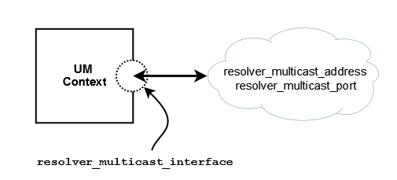

The image below shows a simplified relationship between the primary multicast resolver network options.

See also Topic Resolution in the Ultra Messaging Concepts Guide for more information.
Reference
resolver_multicast_address (context)
- Multicast address (or domain name of the multicast address) used for Topic Resolution. This option automatically sets the values for resolver_multicast_incoming_address (context) and resolver_multicast_outgoing_address (context) as evidenced by the default values for all three options, which are the same.
| Scope: | context |
| Type: | struct in_addr |
| Default value: | 224.9.10.11 |
| When to Set: | Can only be set during object initialization. |
resolver_multicast_incoming_address (context)
- Incoming multicast address (or domain name of the multicast address) used for finer control of Topic Resolution. This value may be set to 0.0.0.0 (INADDR_ANY), to switch off listening to topic resolution messages. This means that queries from receivers or advertisements from sources will not be handled.
- See also resolver_multicast_outgoing_address (context).
| Scope: | context |
| Type: | struct in_addr |
| Default value: | 224.9.10.11 |
| When to Set: | Can only be set during object initialization. |
resolver_multicast_incoming_port (context)
- Incoming multicast port used for finer control of Topic Resolution.
- See also resolver_multicast_outgoing_port (context).
- See Port Assignments for more information about configuring ports.
| Scope: | context |
| Type: | lbm_uint16_t |
| Default value: | 12965 |
| Byte order: | Network |
| When to Set: | Can only be set during object initialization. |
resolver_multicast_interface (context)
- Specifies which network interface UM sends/receives all multicast traffic (Topic Resolution, LBT-RM, Multicast Immediate Messaging). Can specify full IP address of interface, or just network part (see Specifying Interfaces for details). Default is set to default_interface (context) if specified. Otherwise, it is set to the default multicast interface as determined by UM (the first multicast-capable, non-loopback interface).
| Scope: | context |
| Type: | lbm_ipv4_address_mask_t |
| Default value: | 0.0.0.0 |
| When to Set: | Can only be set during object initialization. |
resolver_multicast_outgoing_address (context)
- Outgoing multicast address (or domain name of the multicast address) used for finer control of Topic Resolution.
- See also resolver_multicast_incoming_address (context).
| Scope: | context |
| Type: | struct in_addr |
| Default value: | 224.9.10.11 |
| When to Set: | Can only be set during object initialization. |
resolver_multicast_outgoing_port (context)
- Outgoing multicast port used for finer control of Topic Resolution.
- See also resolver_multicast_incoming_port (context).
- See Port Assignments for more information about configuring ports.
| Scope: | context |
| Type: | lbm_uint16_t |
| Default value: | 12965 |
| Byte order: | Network |
| When to Set: | Can only be set during object initialization. |
resolver_multicast_port (context)
- Multicast port used for Topic Resolution. This option automatically sets the values for resolver_multicast_incoming_port (context) and resolver_multicast_outgoing_port (context) as evidenced by the default values for all three options, which are the same.
- See Port Assignments for more information about configuring ports.
| Scope: | context |
| Type: | lbm_uint16_t |
| Default value: | 12965 |
| Byte order: | Network |
| When to Set: | Can only be set during object initialization. |
resolver_multicast_receiver_socket_buffer (context)
- Value used to set SO_RCVBUF value of the resolver receivers. In some cases the OS will not allow all of this value to be used. A value of 0 instructs UM to use the default OS values. See the section on Socket Buffer Sizes for platform-dependent information. See also our white paper Topics in High Performance Messaging for background and guidelines on UDP buffer sizing.
| Scope: | context |
| Type: | lbm_ulong_t |
| Units: | bytes |
| Default value: | 8388608 (8MB) |
| When to Set: | Can only be set during object initialization. |
resolver_multicast_ttl (context)
- The IP TTL (hop count) to use for a Topic Resolution packet. A value of 1 confines the packet to the local network (but may also cause high CPU usage on some routers). Also controls TTL on LBT-RM packets.
| Scope: | context |
| Type: | lbm_uint8_t |
| Default value: | 16 |
| When to Set: | Can only be set during object initialization. |